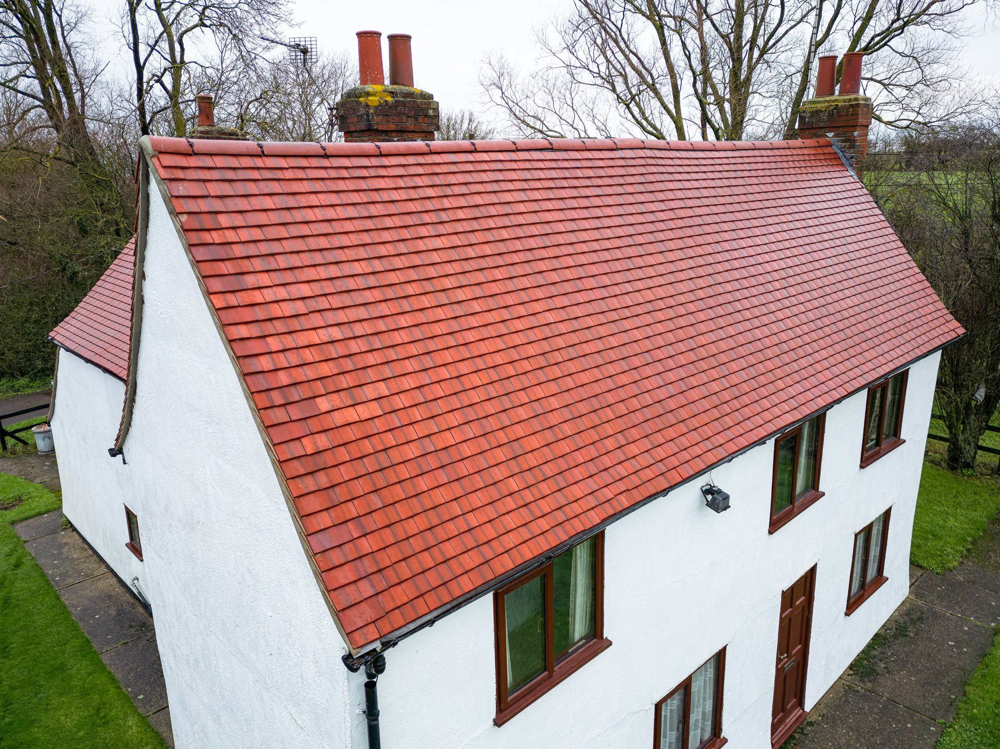

5,0★
aus 17
Bewertungen
Bewertungen

Abdichtung & Flachdach aus Meisterhand · Abdichtungstechnik Matthias Konrad ist Ihr Partner rund um Abdichtung und Flachdach: von der Flachdachabdichtung über Bauwerks- und Kellerabdichtung bis zur Balkon- und Terrassenabdichtung. Saubere Arbeit, feste Termine, ehrliche Beratung.
Leistungen
Von der Flachdachabdichtung bis zur Bauklempnerei · bei Abdichtungstechnik Matthias Konrad bekommen Sie alles rund um Abdichtung aus einer Hand. Sauber, termintreu, fachgerecht.
Abdichtung mit Bitumen- oder Kunststoffbahnen, Gefälledämmung und sauberem Wasserablauf · dicht, langlebig und fachgerecht verschweißt.
Keller, Fundamente und erdberührte Bauteile zuverlässig gegen Feuchtigkeit und drückendes Wasser abgedichtet · von außen wie von innen.
Balkone und Terrassen dauerhaft dicht · fachgerechter Aufbau, sauberes Gefälle und dichte Anschlüsse gegen Durchfeuchtung.
Verlegung und Verschweißung von Bitumen-Schweißbahnen und Kunststoffbahnen · sauber verarbeitet für eine dauerhaft dichte Fläche.
Undichte Stellen, Sturmschäden oder altersschwache Abdichtung · wir prüfen, reparieren und sanieren Ihr Dach zuverlässig.
Verblechungen, Attiken, Ortgänge und Entwässerung · präzise Klempnerarbeit, die Abdichtung und Bauwerk vor Wasser schützt.

5,0 ★ · 17 BewertungenHandwerk & Qualität
Unser Betrieb verbindet erfahrenes Abdichtungs-Handwerk mit aktuellen Bahnen und Normen. Wir arbeiten sauber, termintreu und zum fairen Festpreis · vom ersten Aufmaß bis zur besenreinen Übergabe der Baustelle.
Warum Abdichtungstechnik Matthias Konrad
Kurze Wege, feste Termine und ein Ansprechpartner, der Sie kennt. Bei uns wissen Sie immer, woran Sie sind.

Ihr Angebot
Sagen Sie uns Gebäude und Anliegen · wir kommen zum Aufmaß und machen Ihnen ein faires Festpreis-Angebot für Ihre Abdichtung. Schnell und unverbindlich.
Kontakt
Rufen Sie an oder schicken Sie uns Ihre Anfrage direkt über das Formular. Matthias Konrad meldet sich schnellstmöglich zurück.
Ihre Anfrage ist eingegangen. Matthias Konrad meldet sich schnellstmöglich bei Ihnen.